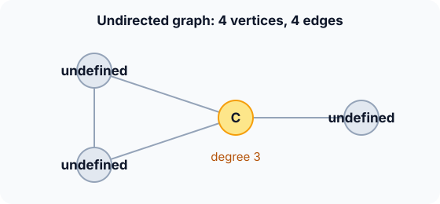

Prerequisites
- Arrays, including 2D arrays.
- Linked lists or dynamic arrays.
- The words vertex (node), edge, degree.
The analogy
Everyday analogy
Think of two ways to record who knows whom in a class. A big grid with every name on both axes and a tick where two people know each other; or, for each person, a short list of their friends.
The grid (matrix) lets you check any pair instantly but is mostly empty space. The friend lists take space only for real friendships. Graphs are stored in exactly these two ways.
How it works
Notation: $V$ = number of vertices, $E$ = number of edges. The graph here is undirected: an edge A–B is stored in both directions.
Start with one graph, two layouts, by hand
Vertices A, B, C, D (indices 0–3). Edges: A–B, A–C, B–C, C–D. Predict, then open "Check".
Example: predict before you read
Step 1. Fill row A of the adjacency matrix (columns A, B, C, D).
Check
0 1 1 0: A connects to B and C, not to itself or D.
Step 2. Cover the next line and guess: what is C's adjacency list, and its degree?
Check
C: A, B, D. Degree 3, the length of its list (or the number of 1s in row C).
Step 3. Count the 1s in the whole matrix and the total length of all lists. Predict both.
Check
Both are 8 = 2 × 4 edges, because each undirected edge appears twice. The matrix also stores 8 zeros.

Quick recall: Before reading further, cover the text above and say out loud: in an undirected graph, why does each edge appear twice in the matrix?
Check your answer
Edge A–B means A is a neighbour of B and B is a neighbour of A, so both m[A][B] and m[B][A] are 1.
Finish the picture: directed and weighted
Change the graph: make it directed (A → B, A → C, B → C, C → D) and give each edge a weight.
- Directed matrix. Predict: is the matrix still symmetric?
Check
No.
m[A][B] = 1butm[B][A] = 0. There are now only 4 ones, one per arrow. - Weighted edges. Predict how to store a weight of 7 on A → B in each layout.
Check
Matrix: put 7 in
m[A][B]instead of 1 (0 or ∞ for "no edge"). List: store pairs, A: (B, 7), (C, …).
Quick recall: Without scrolling up, say out loud: to list all neighbours of a vertex, which layout is faster when the graph is sparse?
Check your answer
The adjacency list: it has exactly deg(v) entries, while a matrix row always has $V$ cells to scan.
The rule in plain words
Adjacency matrix: a $V \times V$ array; cell $(u, v)$ holds 1 (or the weight) if there is an edge $u \to v$.
Adjacency list: for each vertex, the list of its neighbours. Use a matrix for dense graphs and constant-time edge checks; use lists for sparse graphs, which is most real ones.
Quick recall: Before you read the code, describe how to compute every vertex's degree from a matrix, in your own words. Then check below.
Check your answer
For each row, count the 1s; that count is the vertex's degree.
The code
Read this code after you have filled in the matrix by hand. It will make more sense.
void add_edge(int m[][4], int u, int v) { /* undirected: store both ways */
m[u][v] = 1;
m[v][u] = 1;
}
void degrees(int m[][4], int n, int deg[]) {
for (int u = 0; u < n; u++) {
deg[u] = 0;
for (int v = 0; v < n; v++) deg[u] += m[u][v]; /* count the 1s in row u */
}
}Definition
What you just did, in one line: a graph $G = (V, E)$ is a set of vertices joined by edges; an adjacency matrix stores it as a $V \times V$ grid, an adjacency list as one neighbour list per vertex.
graph LR
A((A)) --- B((B))
A --- C((C))
B --- C
C --- D((D))
How fast is it?
Quick recall: Before looking at the formula, predict: a road map with 1,000,000 places and 3,000,000 roads. How many matrix cells, and how many list entries?
Check your answer
$10^{12}$ matrix cells versus about $6 \times 10^6$ list entries: the matrix is hopeless here.
An undirected simple graph has at most one edge per pair of vertices, and the sum of degrees counts every edge twice:
$$E \;\le\; \frac{V(V-1)}{2}, \qquad \sum_{v} \deg(v) \;=\; 2E$$A graph with $E$ close to $V^2$ is dense; with $E$ close to $V$ it is sparse.
| Operation | Matrix | List | Why |
|---|---|---|---|
| Memory | $O(V^2)$ | $O(V + E)$ | Matrix stores every pair |
| Is $u$–$v$ an edge? | $O(1)$ | $O(\deg u)$ | One cell vs scan a list |
| List neighbours of $u$ | $O(V)$ | $O(\deg u)$ | Whole row vs only real neighbours |
| Add an edge | $O(1)$ | $O(1)$ | Set a cell / append to a list |
| Visit all edges (BFS, DFS) | $O(V^2)$ | $O(V + E)$ | Sum of row scans vs sum of list lengths |
Warning
Running BFS or DFS on a matrix costs $O(V^2)$ even for a graph with few edges, because every row is scanned in full. The same algorithm on lists is $O(V + E)$.
Exam tip
The standard comparison table (memory, edge check, neighbour listing) is asked constantly. Add the rule of thumb: dense → matrix, sparse → list.
Common mistakes
- Storing only one direction of an undirected edge.
- Choosing a matrix for a huge sparse graph and running out of memory.
- Using 0 for "no edge" in a weighted graph where 0 can also be a real weight.
Try it yourself
Exercise 1 (warm-up)
For the graph A–B, A–C, B–C, C–D, write all four adjacency lists.
Hint
Each undirected edge appears in two lists.
Answer
A: B, C · B: A, C · C: A, B, D · D: C.
Exercise 2 (a bit harder)
A social network has 1,000,000 users, each with about 200 friends. Estimate the memory of a bit matrix versus adjacency lists of 4-byte IDs. Write your answer down before you open it.
Show answer
Matrix: $10^{12}$ bits ≈ 125 GB. Lists: $10^6 \times 200 = 2 \times 10^8$ entries × 4 bytes ≈ 800 MB. Lists win by a factor of over 100.
Did you know?
Did you know?
Real-world graphs (roads, the web, social networks) are almost always sparse: a web page links to a few dozen others, not to billions.
Graph libraries such as NetworkX and Boost Graph use adjacency lists by default; matrices appear in linear-algebra methods like PageRank, where the matrix is stored in a sparse format.
Key points to remember
If you remember one thing from each line, remember the because.
- A matrix answers edge queries in $O(1)$ because the answer is one cell
m[u][v]. - A matrix needs $O(V^2)$ memory because it stores every pair, edge or not.
- Lists need $O(V + E)$ memory because they store only real edges.
- Traversals cost $O(V + E)$ on lists because each list is scanned once and their lengths sum to $2E$.
- Undirected edges appear twice because each endpoint is a neighbour of the other.
Self-check questions
Answer these in order, out loud. They follow the page, so your answers become the script of your video.
- How are an adjacency matrix and adjacency lists like a tick grid versus friend lists?
Sample answer
The grid has a cell for every pair and ticks the friends, mostly empty; the lists only record actual friendships.
- Encode A–B, A–C, B–C, C–D: give row A of the matrix and C's list.
Sample answer
Row A is 0 1 1 0. C's list is A, B, D.
- Why does
add_edgewrite bothm[u][v]andm[v][u]?A good answer mentions undirected edges.
Sample answer
The graph is undirected, so v is u's neighbour and u is v's neighbour; the matrix must be symmetric.
- So what are the two standard graph representations, in one sentence each?
Sample answer
An adjacency matrix is a $V \times V$ grid marking each edge; an adjacency list stores, for each vertex, the list of its neighbours.
- Why is BFS $O(V^2)$ on a matrix but $O(V + E)$ on lists?
A good answer looks at how neighbours are found.
Sample answer
On a matrix, finding neighbours scans a whole row of $V$ cells for every vertex. On lists you only scan real neighbours, and all lists together have $2E$ entries.
- Compare memory, edge check and neighbour listing for both.
Sample answer
Matrix: $O(V^2)$, $O(1)$, $O(V)$. List: $O(V + E)$, $O(\deg u)$, $O(\deg u)$.
- When would you still choose a matrix?
Sample answer
For small or dense graphs, or when the algorithm checks "is u–v an edge?" constantly, as Floyd-Warshall does.
- If you had to teach this to a friend in 2 minutes, what would you leave out, and why?
Sample answer
I'd leave out directed/weighted variants and the degree-sum formula. I'd keep the grid-versus-friend-list analogy, the 4-vertex example, and "dense → matrix, sparse → list".
External resources
- VisuAlgo: Graph data structures: draw a graph and see its matrix, list and edge list side by side.
- GeeksforGeeks: Graph representations: matrix and list with code.
- Wikipedia: Adjacency list: trade-offs against the matrix.
- MIT OCW 6.006: lecture on graph representations and BFS.
Videos
- YouTube search: adjacency matrix vs list: a short comparison.